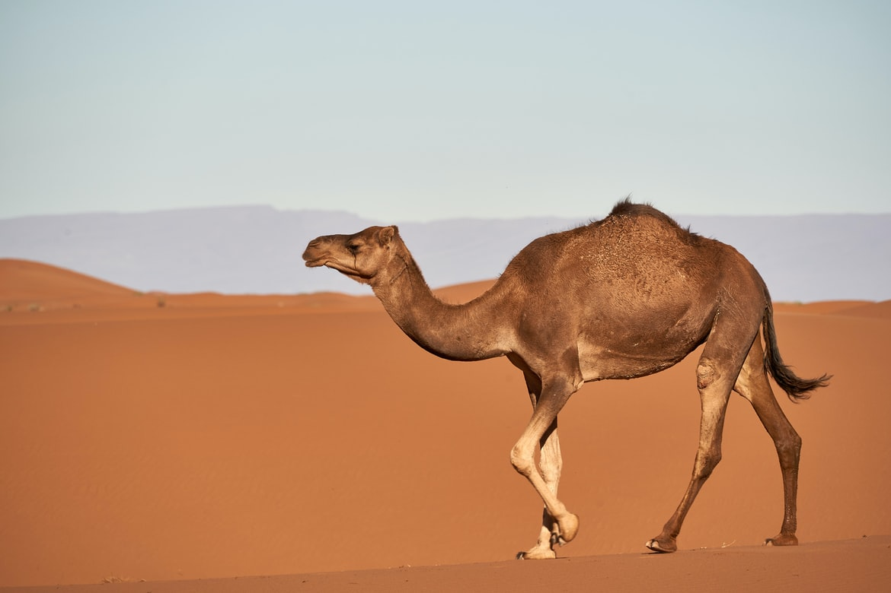

낙타는 단봉낙타와 쌍봉낙타의 두 종류가 있다. 단봉낙타는 혹이 하나로 아프리카나 아시아의 남서부에 분포하며, 몸길이 3m, 높이 1.8∼2.1m, 체중 450∼600㎏이다. 쌍봉낙타는 혹이 두개로 단봉낙타보다 몸이 작으며 중앙아시아에 분포한다. 발가락은 2개로 모래땅을 걸어 다니기에 알맞는 구조로 되어 있다. 또, 콧구멍을 막을 수 있으며, 귀 주위의 털도 길어서 모래먼지를 방지할 수 있다. 등 위의 혹은 물주머니가 아니고 지방덩어리이다. 따라서 며칠 동안 먹이를 섭취하지 않아도 활동할 수 있는데, 이때에는 혹이 점점 작아지고 종래는 소실된다. 3일간 물을 마시지 않아도 별 지장이 없는 것도 탈수로 혈액이 짙어져도 타원형의 적혈구가 농축된 헤모글로빈을 가지고 혈관 구석구석을 누비면서 세포에 산소를 공급하기에 가능하며, 적혈구가 수분을 잘 빨아들여서 수분유지가 가능하다. 1회에 57ℓ의 물을 마실 수 있으며, 임신기간은 1년, 수명은 40∼50년이다.
한번에 500㎏의 화물을 운반할 수 있을 정도로 힘이 세며, 장시간 물을 마시지 않고 지낼 수 있기 때문에 일찍부터 가축화되었다. 단봉낙타는 서기전 3000년, 쌍봉낙타는 서기전 1800년경에 가축화된 것으로 알려져 있다. 운반이나 승용(乘用) 이외에 고기는 식용으로, 젖은 음료로, 털은 직물에 이용되므로 사막에서는 없어서는 안 될 중요한 가축이다. 우리나라에는 고려 초에 거란인이 타고 온 낙타 54필을 만부교 아래에 매어 굶어죽게 하였다는 기록이 있을 뿐이다. 1922년 창경원 동물원 개원 당시에 수입하였으며, 1955년 암스테르담동물원에서 다시 한 쌍을 수입하였다. 현재는 각 동물원에서 관람용으로 사육하고 있다. [네이버 지식백과] 낙타 [駱駝] (한국민족문화대백과, 한국학중앙연구원)